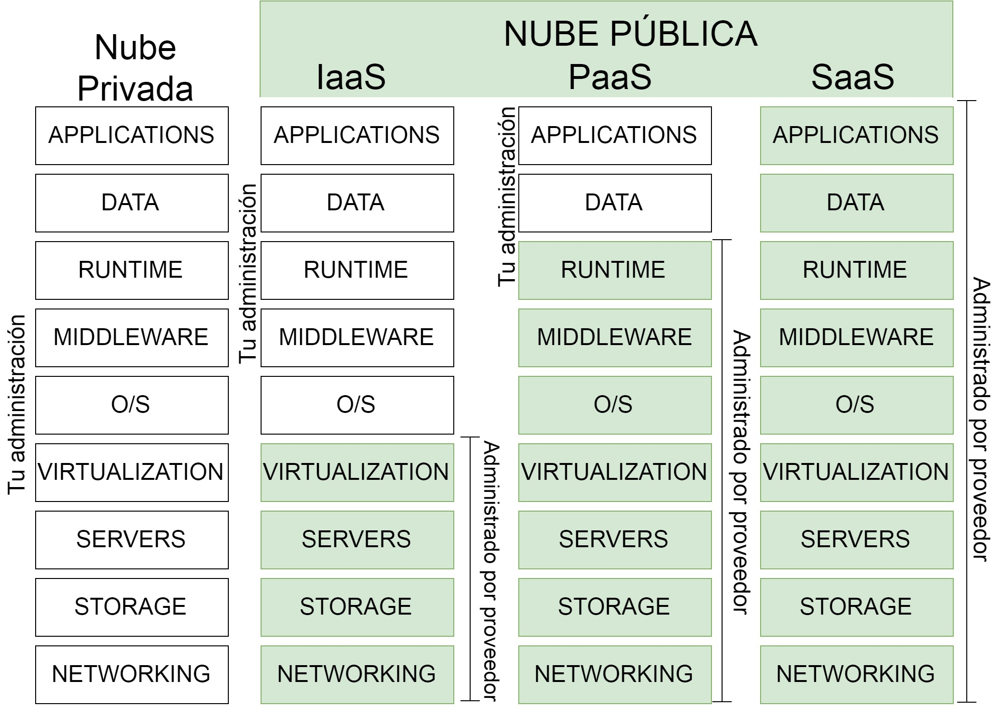

Simposio de Redes - Sistemas Operativos - Fundamentos Informáticos - Seguridad informática
SDN en un entorno de Cloud Computing
Montes de Oca, Federico; Galarza, Brian; Morales, Martin; Encinas, Diego
Contenidos
-
Introducción
- Cloud Computing
- Redes Definidas por Software
-
Herramientas
- OpenFlow
- MiniNet
- Amazon Web Services
-
Desarrollo y Ejecucion
-
Conclusiones
-
Trabajos a futuro
-

Introducción
Redes definidas por Software y Cloud Computing.
Con el aumento de los servicios basados en la nube, la necesidad de aumentar la agilidad de acceso a aplicaciones, infraestructuras, recursos de telecomunicaciones y junto a la complejidad de mejorar la seguridad de estos servicios, se requiere una escalabilidad dinámica de la capacidad de cómputo, almacenamiento y recursos de red. De esta manera, el lazo entre las SDN y Cloud Computing se hace estrecho.
Esquema de objetivos
Cloud Computing
Cloud Computing: Fundamentos
-
Paradigma de consumo remoto de servicios de cómputo.
-
Abstracción del usuario final sobre la infraestructura.
-
Se explota la virtualización para la demanda y elasticidad de las instancias. (NFV)
-
Se explotan las redes definidas por software...

Modalidades de Servicio según privacidad
-
Nube privada
- •Mejora la operacion IT interna
- •Mejoras modestas en costes
- •Escalabilidad y flexibilidad limitadas
- •Riesgo de obsolescencia
- •Gestión limitada de picos de demanda
- •Proyectos a medida
-
Nube híbrida
- •Mix entre nube privada y pública
- •Incertidumbres sobre calidad
- •Adecuado en escenarios de desbordamiento y poco críticos
- •Proyectos a medida
-
Nube pública
- •Mayor escala, costes mas bajos
- •Difícil integración con Políticas de la empresa
- •Incertidumbres sobre la calidad y seguridad
- •Mayor nivel de autogestión
- •Modular y escalable
Modalidades según alcance de servicio
-
- 
-
Alcance de servicios
-

-
AWS EC2 pertenece a IaaS
Redes definidas por Software
Redes definidas por Software: Fundamentos
-
•Paradigma novedoso con numerosas ventajas frente al paradigma tradicional de redes de computadoras.
-
•Forma de gobierno que centraliza el control del tráfico de datos.
-
•Una red SDN es capaz de cambiar en tiempo real la ruta de los datos.
-
•Un cambio de norma o de políticas puede disparar un cambio automático en el enrutamiento controlado por software.
-
•Solución más rápida, más flexible y más rentable.
Redes definidas por Software: Arquitectura
-
•Capa de Aplicación: Aplicaciones SDN que comunican los comportamientos deseados al controlador.
-
•Capa de Control: “Cerebro” de la red. Encargado de retransmitir información a los conmutadores y enrutadores.
-
•Capa de Infraestructura: Compuesto por los enrutadores y conmutadores compatibles con protocolos de tipo OpenFlow
-
CAPAS SDN
Herramientas
Herramientas: OpenFlow
-
•Protocolo de comunicación entre el plano de control y plano de datos por excelencia en las SDN.
-
•Busca separar el plano de control del plano de datos de las redes tradicionales.
-
•Hoy en día numerosos switches físicos son lanzados con compatibilidad OpenFlow ya que la tendencia de las empresas en el ámbito de redes es claro: apuntan hacia la rentabilidad y flexibilidad.
Herramientas: Mininet
-
•Emulador Open Source de redes SDN programado en Python.
-
•Tiene el objetivo de apoyar el desarrollo de las SDN.
-
•Tráfico artificial entre nodos virtuales de la red.
-
•Se pueden crear redes virtuales, hosts corriendo kernels reales y dispositivos de red virtualizados de forma simple y rápida.
-
•Se encuentra acotado a ejecutarse en un host anfitrión.
Herramientas: Amazon Web Services (AWS): Elastic Cloud Computing (EC2)
-
•Uno de los principales servicios de AWS para la computación en la nube. •Dispone de consola de administración
-
•Se pueden lanzar instancias y aplicarles cualquier servicio agregado, como redundancia geográfica, optimización de latencia, y muchos más.
-
AWS EC2
Desarrollo
Desarrollo: Despliegue
-
Se lanza una instancia de AWS EC2 para poder desplegar una red virtual SDN con Mininet
-
Especificaciones t2.micro
-
Se lanza una máquina virtual local con 1 CPU y 1 GB de ram a fin de contrastar los resultados.
Configuración de la VM Local: Ubuntu Server 14.04 64 bits, 1024MB de RAM, 10GB fijos de ROM.
Desarrollo: Ejecución
-
Se conecta a la instancia remota por SSH con PuTTY
Para esto utilizamos la clave .ppk brindada por AWS
-
Se instala Mininet:
> sudo apt-get install mininet -
Una vez instalado en la VM local y en la instancia de AWS, se despliegan dos hosts interconectados por un Switch SDN para las pruebas con topología single:
Desarrollo: Ejecución
-
•Se utiliza la herramienta Iperf para el análisis de resultados.
•El fin de estas pruebas es analizar el desempeño de las redes SDN virtuales en una instancia de IaaS y en una VM local, enfoncándose en las capacidadades de virtualización en conjunto con las capacidades de red.
-
•Se corren dos pruebas simples:
-
• Throughput de ancho de banda
-
• Latencia
-
Resultados
Resultados: ancho de banda
Resultados: latencia
-
Latencia
Iperf Throughput
-
Tabla Resultados
Benchmark de Latencia
Conclusiones
Marco Teórico
-
SDN
Las SDN, por su parte, son flexibles, robustas, centralizadas, económicamente más eficiente, de rápido despliegue y manipulables a nivel de aplicación. El Cloud Computing necesita de las SDN para brindar QoS, seguridad, despliegues en tiempo real, elasticidad de almacenamiento y para modificar sus sistemas propios de acreditación del servicio de cómputo en la nube.
-
Cloud Computing
La revolución del Cloud es un hecho. Está presente en la vida de las personas mediante los servicios de almacenamiento, redes sociales, IoT y aplicaciones. Desde un buen enfoque, representa el futuro de la computación y las redes. A medida que se vayan mejorando los tiempos de retardo cada vez más servicios van a poder ser brindados por proveedores de Cloud. Por ejemplo, Gaming en la Nube: sin necesidad de costosas consolas.
Marco Práctico
-
SDN
En el apartado de las SDN se generó la simulación realista de una red de computadoras SDN. Se trabajó sobre el plano de datos y se interactuó de forma indirecta con el controlador (sin manipularlo).
-
Cloud Computing
Se realizó un Laboratorio SDN en una instancia IaaS corriendo en AWS EC2. Así, se logró un acercamiento a las tecnologías de enrutamiento utilizadas en centros de cómputo virtuales, tales como los clústeres o los datacenters definidos por software (SDDC), donde resulta vital la flexibilidad de la red en tiempo real para satisfacer los requerimientos de alta disponibilidad.
Trabajos a Futuro
-
Utilización de otras IaaS tales como Google Cloud, Microsoft Azure, OpenNebula, OpenStack.
-
-
Realizar trabajos de inyección de políticas de tráfico a través de la manipulación del plano de control.
-
-
-
implementación de estas herramientas en despliegue de Clusters y SDDC para nubes privadas con OpenStack.
-
Preguntas
Referencias
- Boudacair, M., Jaquenet, C., “Software-Defined Networking: A Perspective from within a Service Provider Enviroment”. IETF - RFC 7149.
- Belizan, M., Duarte, D., Morales,M., Encinas D., “Rendimiento de Cloud Computing Público para el uso de E/S en Clusters”. 5to Congreso Nacional de Ingeniería Informática / Sistemas de Información. CoNaIISI 2017.
- Zaccardi, G., Galarza, B., Morales, M, Encinas, D., “Despliegue y ejecución en un cloud privado”. 4to Congreso Nacional de Ingeniería Informática / Sistemas de Información. CoNaIISI 2016.
- Google App Engine.
- Google Docs.
- Kim, H., & Feamster, N. (2013). Improving network management with software defined networking. IEEE Communications Magazine, 51(2), 114–119.
- Microsoft.
- Jain, R., & Paul, S. (2013). Network virtualization and software defined networking for cloud computing: a survey. IEEE Communications Magazine, 51(11), 24–31.
- Openflow - Stanford.
- Stanford University.
- Mininet.
- Amazon Web Services. AWS | Cloud Computing.
- AWS - Documentación.
- Ubuntu Server.
- Mininet - Documentación.
- Iperf - Documentación
- Software-Defined Data Center - Introducción al servicio.